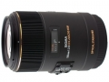

器材库 > 35mm画幅AF定焦镜头 > EX DG 105/2.8 Macro OS HSM

详细规格
镜头类型
微距镜头
发布日期
2011-02-08
焦距
105mm
最大光圈
f/2.8
最小光圈
f/22
视角（对角）
23.3
镜头结构
16片/11组
光圈叶片
9片
最近对焦距离
31.2cm
最大放大倍率
1
滤镜口径
62mm
镜头卡口
Canon EF, Nikon AF, Sigma SA
防抖
否
颜色
黑色
尺寸
78.3×126.4mm
重量
725g
草庐居士2017-05-29 09:504.75 分
操作性 4.50耐用性 4.50性价比 5.00解像力 5.00色彩还原 5.00机械结构 4.50
136670875512015-03-16 03:594.83 分
操作性 5.00耐用性 5.00性价比 5.00解像力 5.00色彩还原 4.00机械结构 5.00
icemanxian2014-04-29 12:03
icemanxian2014-04-29 11:415 分
操作性 5.00耐用性 5.00性价比 5.00解像力 5.00色彩还原 5.00机械结构 5.00
激动的心2014-01-11 12:444.75 分
操作性 5.00耐用性 4.50性价比 5.00解像力 5.00色彩还原 4.50机械结构 4.50
Artechnik2013-02-06 22:394.42 分
操作性 5.00耐用性 4.50性价比 4.00解像力 4.50色彩还原 4.50机械结构 4.00
hamlet19852012-04-15 22:344.17 分
操作性 4.50耐用性 4.00性价比 3.50解像力 4.50色彩还原 4.50机械结构 4.00
产品图 / 样片
EX DG 105/2.8 MACRO OS HSM